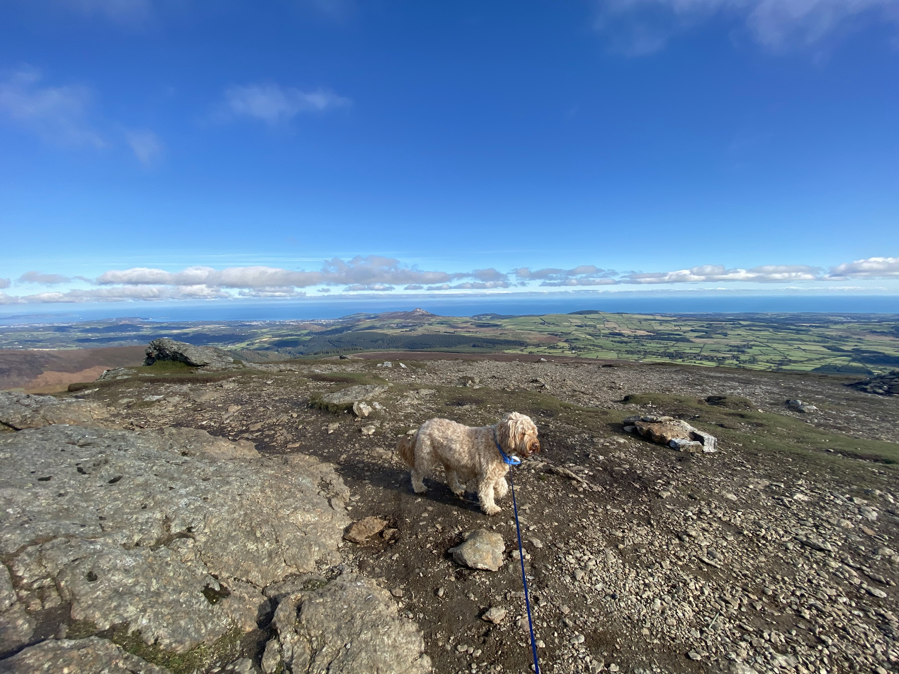
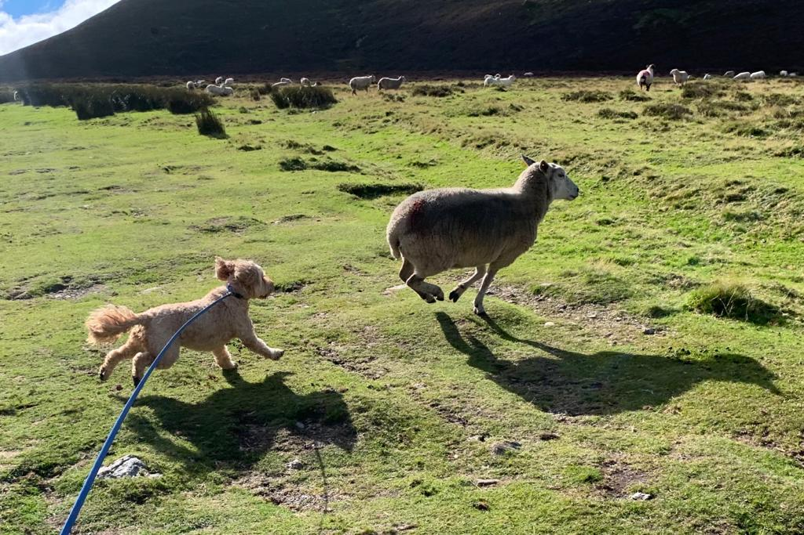
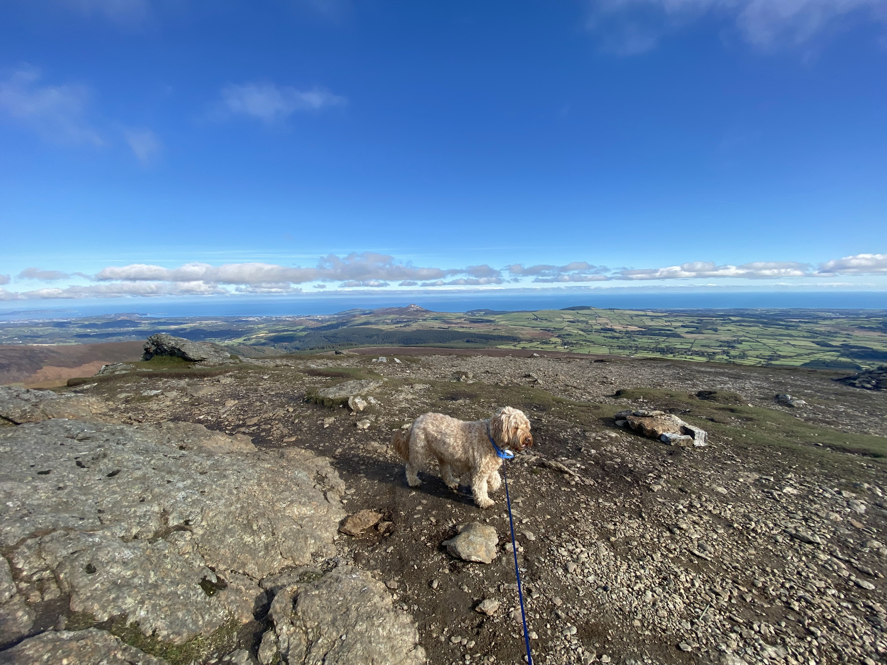
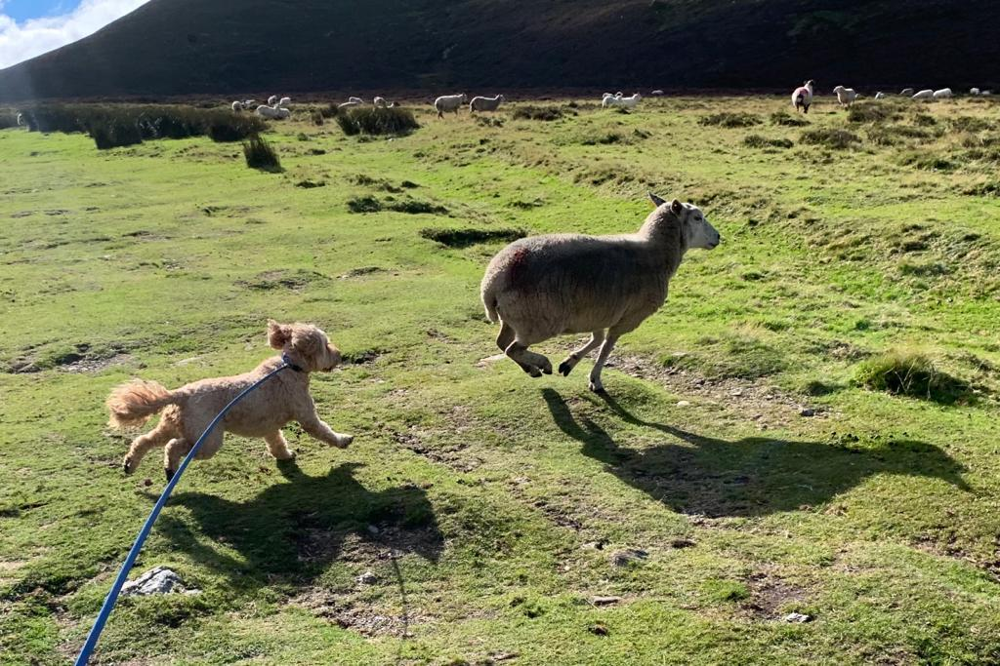
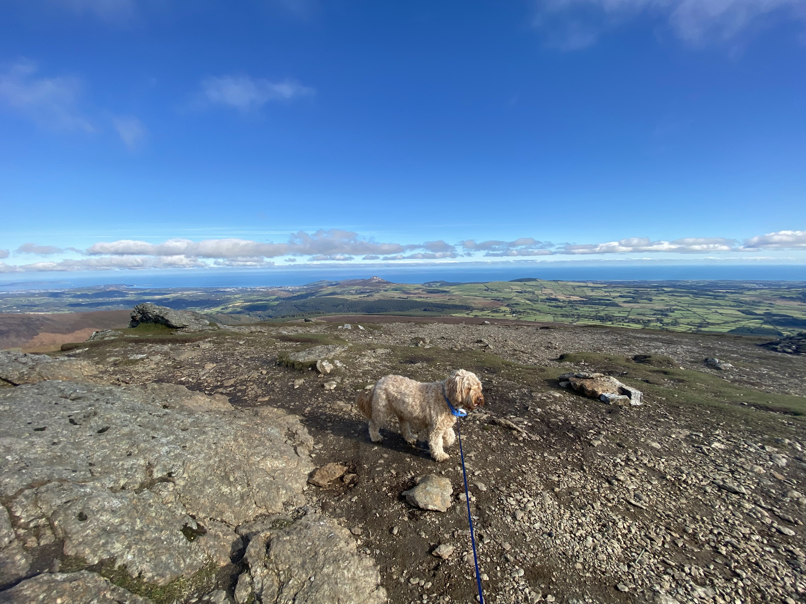
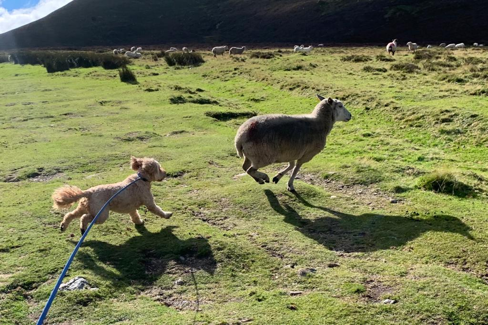
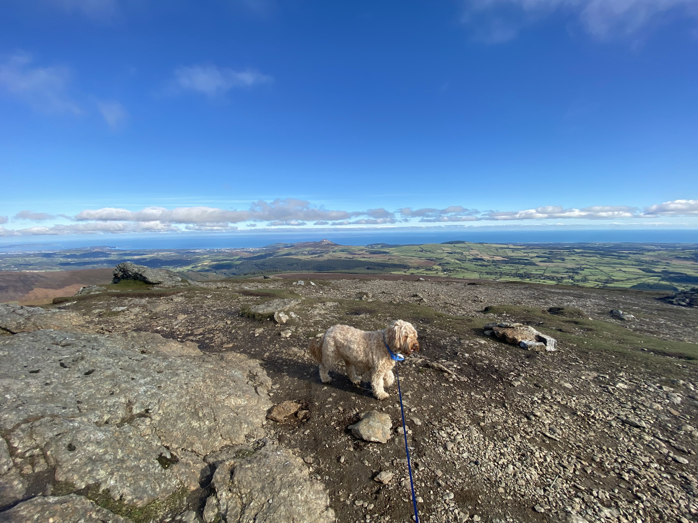
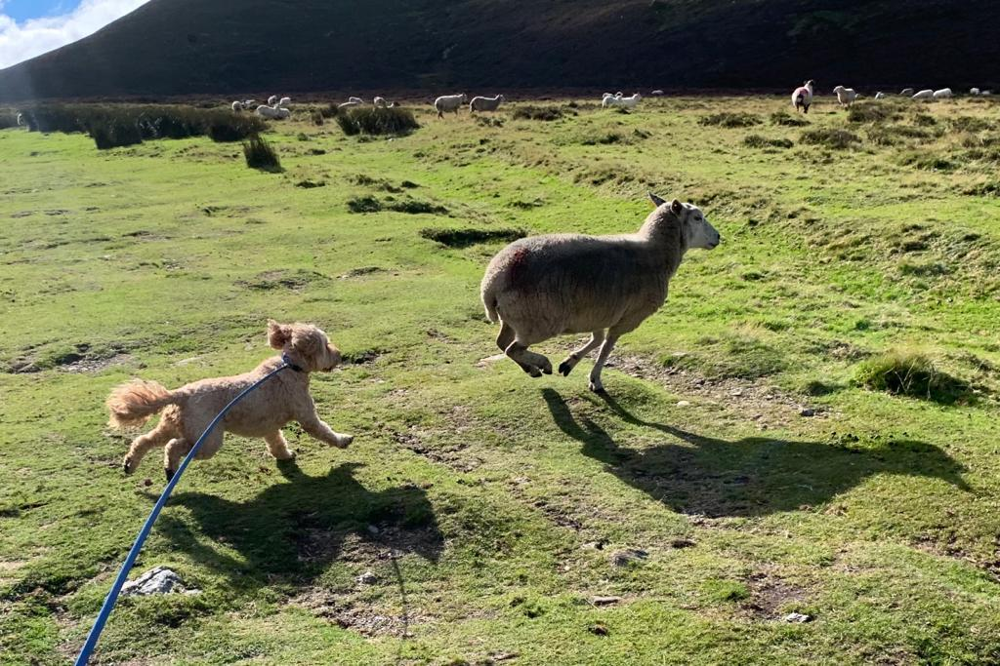

Djouce Mountain Hiking:Solo adventures
 







reason to hike - a source of inspirational quotes according to link
"The best view comes after the hardest climb" "Somewhere between the bottom of the climb and the summit is the answer to the mystery why we climb."- Greg Child
Looking for a challenging workout that also connects you with nature? Look no further than Djouce Mountain in Co. Wicklow, Ireland. With steep inclines and rugged terrain, hiking Djouce Mountain is a true test of physical fitness, while the stunning views provide a sense of tranquility and escape from everyday stresses. Come and experience the magic of this mystical mountain for yourself!